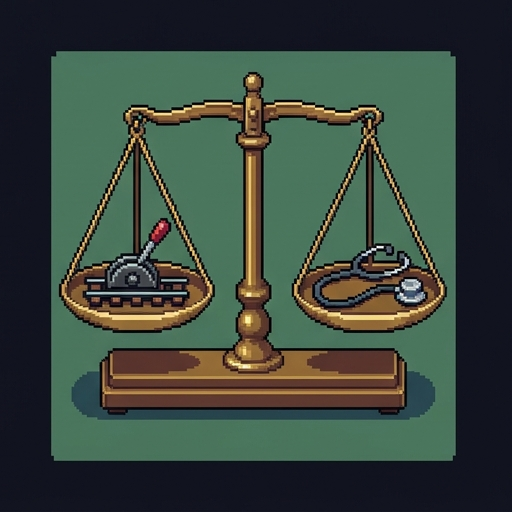
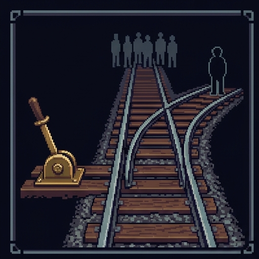
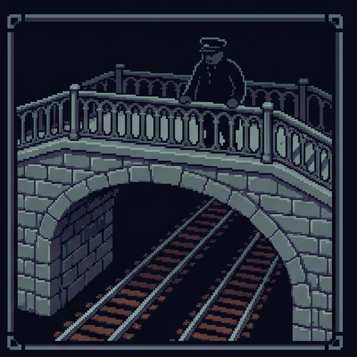
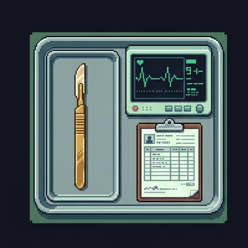
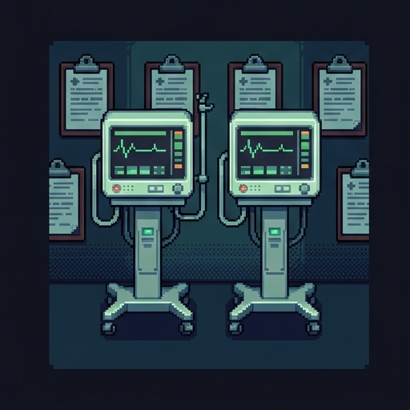
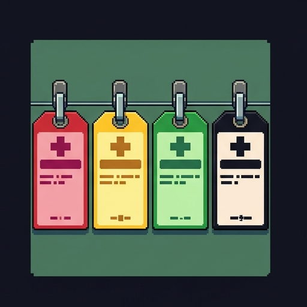

The Switch and the Scalpel
Welcome to Week 0. Before studying moral theories in depth, we start with the machinery of moral intuition: what is a moral dilemma, and why does human moral reasoning resist simple addition?
Use → (or Next) to advance and to reveal points one at a time. F = fullscreen.
Meet Dr. Trackwell
"Most people think ethics is about being a good person," says Dr. Philippa 'Pip' Trackwell, emergency physician and railway safety consultant. "In crisis management, ethics is about what to do when every available option breaks your heart."
- A moral dilemma isn't just a tough choice between what is easy and what is right.
- It is a conflict where fundamental moral principles collide, and choosing one means violating another.
- To find the hidden rules our moral minds run on, philosophers build thought experiments. Each one changes a single detail and holds everything else still.
Before the Signals Turn
Five gut-checks, with no right answers. Just say where you stand right now. We will come back to them at the end to see what shifted.
If you can save five lives by causing one person's death, you are morally required to do so.
There is a fundamental moral difference between actively killing someone and letting them die.
In a hospital with scarce ventilators, machines should always go to whoever has the most years left to live.
It is never acceptable to use an innocent person's body to save others without their consent.
When two patients have an equal chance to survive and only one bed is open, a random lottery is fairer than first-come, first-served.

Philippa Foot · 1967
Case 1: The Spur (The Switch)
A runaway trolley barrels down the track toward five track workers who cannot hear it coming. You stand beside a track switch lever.
- If you do nothing, the trolley continues straight and kills the five workers.
- If you pull the switch, the trolley turns onto a side track (the spur), where it will kill one worker.
- There is no third option, no time to shout, and your own body cannot stop the train.
- The lever is cold in your hand. What is your choice?
Decision Point: The Switch
This one is not graded. Pick the answer you actually hold.
Pull the switch — divert the trolley onto the spur to save the five, killing the one
Do nothing — allow the trolley to stay on its original path and kill the five

Judith Jarvis Thomson · 1976
Case 2: The Footbridge
Same trolley, same five workers. There is no side spur this time. You are standing on a footbridge above the rails.
- Next to you leans a heavy stranger gazing over the railing.
- If you push him over, his heavy body will jam the trolley's wheels and stop the train before it hits the five.
- He dies instantly; the five survive. Your own body is too light to stop the train.
- Your hands are inches from his back. What is your choice?
Thomson called this "Fat Man"; the name Footbridge comes from Greene and colleagues (2001).
Decision Point: The Footbridge
Also not graded. Answer honestly, then compare with the room.
Push the stranger over the railing to stop the train and save the five
Do not push — refuse to shove an innocent bystander to his death
The Paradox of the Two Cases
Because pushing means touching him, and pulling a lever does not.
Because on the footbridge his body is the means, and on the spur his death is a side effect.
Because one feels violent and personal, and the other feels distant and procedural.
Judith Jarvis Thomson · 1985
Case 3: The Loop
To test whether 'physical pushing' vs. 'pulling a lever' was the real difference, Judith Jarvis Thomson invented The Loop.
- The side track is not a dead end. It loops all the way back around and hits the five workers from behind.
- However, there is a heavy worker on the loop track. If you divert the train, it hits him, stops, and the five survive.
- If that track were empty, flipping the switch would do nothing. The trolley would loop around and kill the five anyway.
- Here you flip a lever (no physical contact), but you depend on the body to halt the train.
Decision Point: The Loop
Not graded, and here even the professionals split.
Pull the switch — divert onto the loop because 5 lives saved still outweighs 1
Do not pull — refuse to divert the train when saving the five depends on hitting the person
The Three Moral Levers
When human beings face moral dilemmas, our minds aren't running a single calculator. We weigh at least three distinct intuitive principles:
- 1. Consequences (Outcomes): Maximizing net well-being and saving the greatest number of lives (5 vs. 1).
- 2. Deontic Constraints (Rights & Respect): Respecting individual inviolability; forbidding using someone merely as a tool without consent.
- 3. Causal Agency & Momentum: The moral difference between redirecting an existing threat vs. creating a brand new lethal force.
Doing vs. Allowing Harm
A cornerstone of moral philosophy is the distinction between what we do and what we allow to happen:
- Negative Duties (Do No Harm): A strict moral duty not to inflict injury or kill innocent people.
- Positive Duties (Render Aid): A moral duty to rescue, protect, or help those in peril when possible.
- In ordinary ethics, negative duties almost always trump positive duties: you cannot shoot an innocent person just to collect reward money to donate to charity.
- Pulling the switch feels like a rescue. Pushing the stranger feels like a violation of the negative duty not to kill.
The Doctrine of Double Effect (DDE)
Originating in medieval philosophy (Thomas Aquinas) and formalized in modern ethics, the Doctrine of Double Effect draws a bright line:
- Foreseen side-effect: a good goal (saving five) that carries an unintended bad byproduct (the death on the spur) may be permissible.
- Intended means: using harm to an innocent person as the causal stepping stone to your good goal is impermissible.
- The test: if the one person vanished, would you be glad or thwarted? On the spur, thrilled. On the footbridge or loop, your plan collapses.
Deconstructing the Rail Dilemmas
Action: Turn switch
Role of 1: Foreseen side effect
Direct contact: No (lever)
Redirecting existing threat; harm is not the causal means.
Action: Push stranger
Role of 1: Intended physical buffer
Direct contact: Yes (physical shove)
Initiates new violence; treats human body as mere tool.
Action: Turn switch onto loop
Role of 1: Essential obstacle
Direct contact: No (lever)
Mechanical lever, but causally relies on collision to save the 5.
Testing the Principle
Complete the core distinction of the Doctrine of Double Effect:
Under the Doctrine of Double Effect, it is impermissible to use someone's death as the means to save others, but it may be permissible if their death is a foreseen side-effect of redirecting an existing threat.

Philippa Foot 1967 · Thomson 1976
Case 4: The Organ Transplant
Dr. Pip Trackwell moves from the railway switch to the hospital ward. Five patients are dying of organ failure (heart, lungs, liver, and two kidneys).
- A healthy young traveler walks into the clinic for a routine passport physical.
- His tissue happens to be an exact genetic match for all five dying patients.
- If the surgeon administers a lethal overdose during the exam and harvests his organs, five patients walk out fully restored.
- The math: 1 life taken to save 5 = net +4 lives. Exactly like the track switch.
Decision Point: The Transplant Surgeon
Not graded, though this is the case where agreement runs closest to unanimous.
Harvest the organs — 5 lives saved outweighs 1 life lost
Refuse to harvest — provide conventional care and allow the five to die
Why the Hospital Breaks the Math
Why can't clinical medicine operate on raw arithmetic?
- Fiduciary Duty & Trust: A physician owes a specific duty of care and non-maleficence ("first, do no harm") to every patient who walks through the door.
- Bodily Inviolability: Every human being holds an absolute moral right against being commandeered as a biological spare-parts reservoir.
- Rule-utilitarian collapse: a system that sacrificed healthy patients would cost more lives in avoided care than organ failure ever could.
Analyzing the Transplant Case
The surgeon initiates a brand new lethal harm against someone who was not in danger
The surgeon violates the fundamental clinical duty of non-maleficence owed to their patient
The healthy patient is used merely as a biological means to save other patients
The healthy visitor would almost certainly refuse if the surgeon asked him first

When Scarcity Forces the Choice
Unlike the fictitious transplant surgeon, real emergency physicians face genuine tragic dilemmas during mass casualties, pandemics, and war.
- Under Crisis Standards of Care, the demand for life-saving resources (ventilators, ICU beds, dialysis) vastly exceeds supply.
- Doctors are not choosing between murder and duty; they are allocating scarce positive aid to patients who all face lethal illness.
- When you cannot save everyone, how do you decide who receives treatment?

The Four Triage Tags (START Protocol)
In disaster medicine, responders assign standardized color-coded triage tags in seconds:
- 🔴 Immediate (Red): Life-threatening injuries requiring immediate intervention to survive.
- 🟡 Delayed (Yellow): Serious injuries requiring care, but stable enough to wait hours.
- 🟢 Minor (Green): "Walking wounded" with minor injuries; can wait until urgent cases are stabilized.
- ⚫ Expectant (Black): survival unlikely even with maximal care. Comfort and pain relief come first, so scarce equipment can save others.
Three Ways to Allocate Scarce Beds
When two patients in the 'Red' category arrive for the last ICU bed, which moral rule should decide?
- 1. Short-Term Survival: Give the bed to whoever is most likely to walk out of this hospitalization alive, scored from current organ function.
- 2. Egalitarian Lottery: Give every competing candidate an equal, random chance.
- 3. First-Come, First-Served: allocate to whoever arrived first. That quietly rewards whoever owned a car.
- A fourth rule, maximizing life-years, sounds like the same thing as #1 but is not. Hold that thought.
The Distinction That Does the Work
"Save the most lives" and "save the most life-years" sound identical. They are not, and real protocols are built on the gap between them.
- Short-term survival asks whether this patient will survive this illness, scored from how well the organs are working right now. US protocols use a scale called SOFA.
- Life-years / QALYs asks: how much future does this patient have? That question builds age and disability directly into the score.
- This is why most US crisis standards make short-term survival the primary criterion and refuse to rank patients by remaining lifespan.
- Not only an ethical worry: federal civil-rights guidance in 2020 warned that allocating by age or disability can violate the ADA.
Decision Point: The Last Ventilator
Not graded. This is a live dispute among working ethics committees.
Short-term survival — allocate to whoever is likelier to survive this hospitalization
Lottery — give both an equal random chance
Most years remaining — allocate to whoever has the longest expected future
What the Protocols Actually Say
Ana, because a 34-year-old has far more years of life still ahead of her.
Whichever of the two reached the hospital doors first that evening.
Bram, because the score asks who is likely to survive this admission.
Why Triage Is Not Murder
Because the triage doctor is following an agreed protocol rather than making a personal choice about who lives
Triage allocates scarce positive aid among the sick, whereas transplant kills an unthreatened person
Because Patient B accepted the hospital's triage policy when he was admitted
The Dilemma Switchboard
Step through five classic dilemmas from the rail yard to the ICU. Notice how the interplay of Consequences, Deontic Rights, and Double Effect governs each scenario:
From Triage to Algorithms
Trolley problems and triage protocols are no longer only textbook exercises. They are being written into machines.
- Autonomous vehicles: a car's brakes fail. Should it swerve into a wall, killing its passenger, to avoid five pedestrians?
- Automated Triage Algorithms: Hospital AI systems rank patients on organ transplant waiting lists and ICU admission queues using multi-variable clinical scorecards.
- The Core Lesson: If we do not make our ethical commitments conscious, explicit, and accountable, machines will make them for us in the dark.
Algorithmic Dilemmas
Because unavoidable crash algorithms force software to encode explicit value trade-offs
Because cars will meet these exact situations often enough for the answer to matter in practice
Because road law already specifies what a car must do in an unavoidable crash
What Thought Experiments Actually Do
"A trolley problem isn't about trains," Dr. Trackwell smiles. "And a triage protocol isn't about arithmetic."
- Thought experiments are diagnostic stress-tests for human moral intuitions.
- They demonstrate that we care deeply about both the consequences of our choices and the moral constraints that protect individual rights.
- Doing philosophy means learning to state your reasons clearly when these two valid moral demands pull in opposite directions.
Revisit Your Intuitions
Here are the five gut-checks you rated at the start. Re-rate each one now, and see whether working through the cases changed where you draw the line.
End of the Line
Dr. Trackwell hangs up her signal lantern. "You have been using four ideas all afternoon without their names," she says. "Here they are. You already know what they do."
- Consequentialism: Pay attention to outcomes and net lives saved (5 vs. 1).
- Deontology: Respect inviolable rights; never treat people merely as tools or bodily buffers.
- Doctrine of Double Effect: Distinguish between intended means and foreseen, unavoidable side-effects.
- Crisis Triage: In tragic scarcity, transparent and fair allocation protocols prevent arbitrary harm.